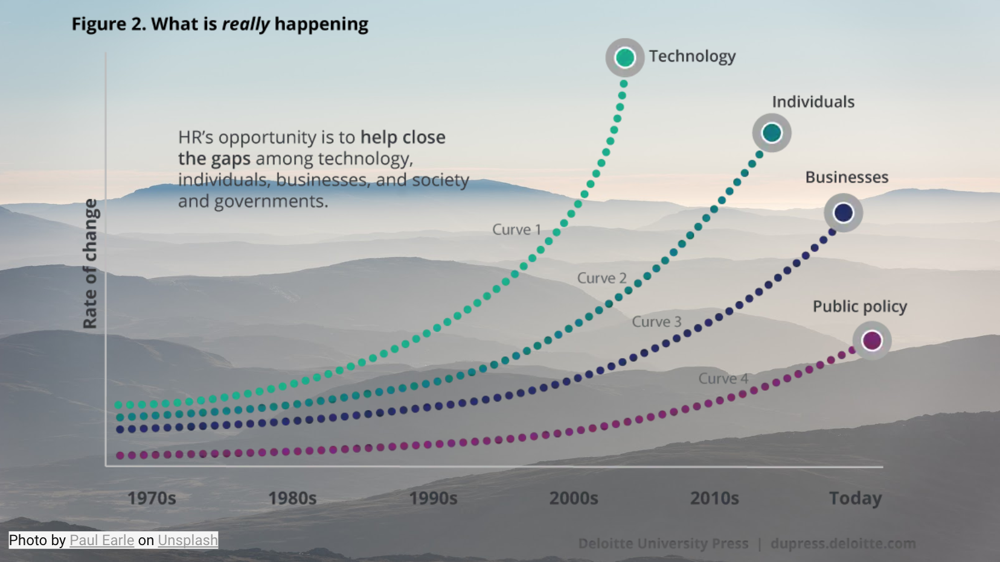

Digital Business Innovation
Data as an Asset
Witek ten Hove
minorsmart.github.io/presentations/dbi
Wat is een FinTech-bedrijf?

Disruptie

Digital disruption


AI Toepassingsgebieden
AI in de Financiële Sector
Opdracht - Onderzoek deze FinTech
Wat waren de uitdagingen / problemen?
Welke oplossingen zijn gevonden?
Welke technologieën zijn toegepast?